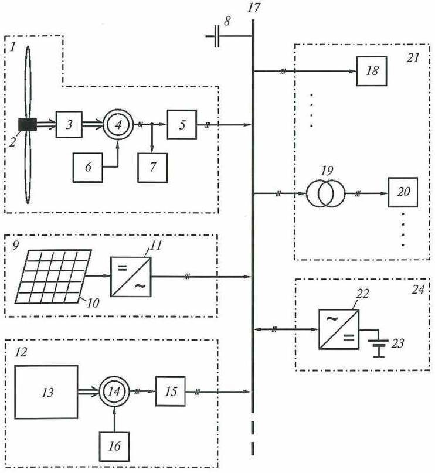
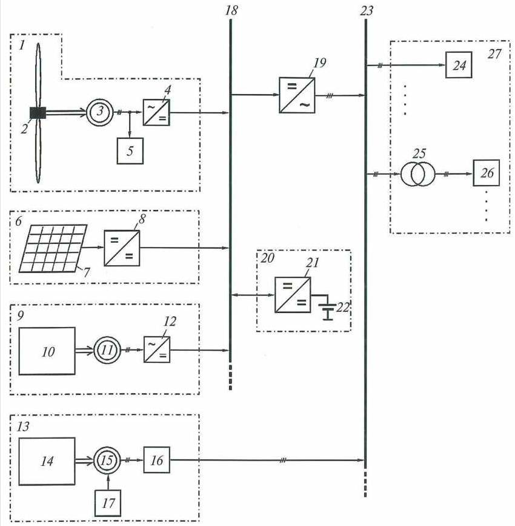
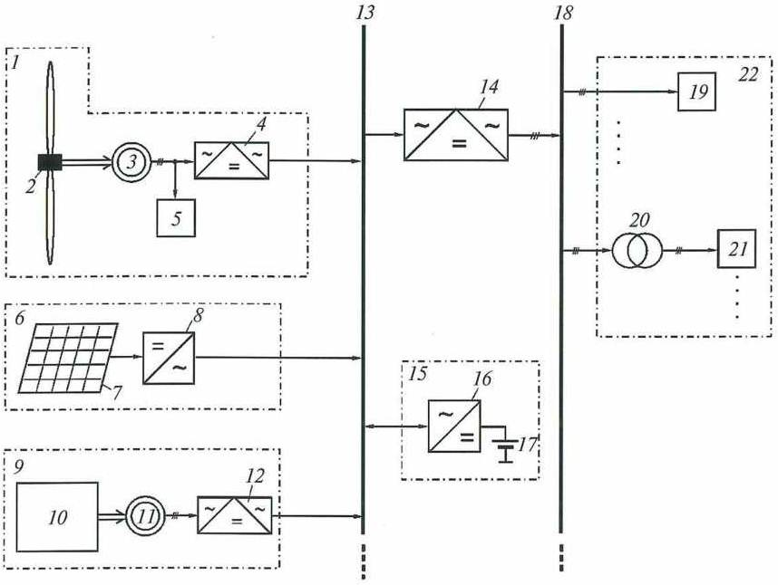
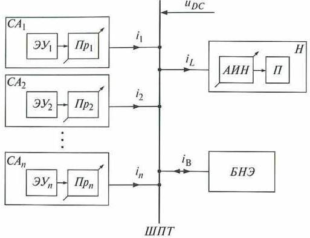

Сравнительный анализ нескольких схем автономного электроснабжения

// Журнал «Промышленная Энергетика», 2012 - № 07, стр. 46-51
Сравнительный анализ схем автономных электростанций,
использующих установки возобновляемой энергетики*
Обухов С. Г., Плотников И. А., кандидаты техн. наук
Национальный исследовательский Томский политехнический университет
Выполнен сравнительный анализ схем автономных электростанций, использующих установки возобновляемой энергетики. Предложена модульная схема электростанции, позволяющая суммировать и распределять потоки энергии от генерирующих источников и реализовывать эффективные алгоритмы управления этими процессами.
Основу малой энергетики России составляют дизель-генераторы (ДГ) и дизельные электростанции (ДЭС) на их основе. Как источники электроэнергии автономных систем электроснабжения они наряду с очевидными достоинствами имеют и значительные недостатки, основные из которых — большой расход органического топлива на выработку 1 кВт • ч электроэнергии и загрязнение окружающей среды. В то же время полноценной замены им пока нет.
К числу наиболее перспективных направлений повышения энергетической эффективности локальных систем электроснабжения относятся использование в энергетическом балансе регионов возобновляемых источников энергии (ВИЭ) и оптимизация режимов работы основного энергетического оборудования. Так как для потребителей электроэнергии децентрализованных зон необходим гарантированный источник питания, наиболее целесообразными вариантами автономных систем представляются ветродизельные и ветрофотодизельные энергетические установки.
Большинство находящихся в эксплуатации и предлагаемых на рынке автономных энергетических систем, использующих ВИЭ, являются технически законченными изделиями, адаптированными под строго определенный тип энергетического оборудования, не допускающими возможности расширения их функциональных возможностей и наращивания мощностей за счет подключения новых генерирующих источников. Это обусловлено главным образом существенным различием основных технических показателей генерируемой ВИЭ электроэнергии, такими, как род тока, частота и значение выходного напряжения.
Отсутствие на рынке возобновляемой энергетики универсальных устройств, обеспечивающих возможность объединения в рамках единой энергетической системы разнотипных энергетических установок с эффективным управлением режимами работы, негативно отражается на развитии малой энергетики России, поэтому их создание является актуальной задачей.
Возможны разные варианты сопряжения ДЭС, ветроэнергетических установок (ВЭУ) и фотоэлектрических установок (ФЭУ) при работе на общего потребителя, которые могут значительно различаться как по составу используемого электрооборудования, так и по технико-экономическим характеристикам.
На рис. 1 представлен распространенный вариант схемы гибридной электростанции, использующей ВИЭ, где источники подключаются непосредственно к распределительной сети объекта без промежуточного преобразования электроэнергии. Система управления станцией при этом должна обеспечивать не только стратегию регулирования мощностей ДГ, ФЭУ и ВЭУ, но и синхронизацию запуска агрегатов и их дальнейшую синхронную работу.

Рис.1. Схема гибридной электростанции с непосредственным подключением
генерирующих установок к распределительной сети объекта электроснабжения.
1 - Ветроэнергетическая установка; 2 – ветротурбина; 3- редуктор-мультипликатор; 4, 14 – синхронные электромашинные генераторы; 5, 15 – устройства плавного пуска; 6, 16 – регуляторы тока возбуждения синхронных генераторов; 7 – блок балластных нагрузок; 8 – компенсатор реактивной мощности; 9 – фотоэлектрическая установка; 10- солнечная панель; 11 – импульсный преобразователь постоянного напряжения в переменное (инвертор); 12 – дизель-генератор; 13 – дизельный двигатель; 17 – шина переменного тока 220/380 В, 50 Гц; 18 – потребители 220/380 В; 19 – силовой повышающий трансформатор; 20 – потребители 6 или 10 кВ; 21 – объект децентрализоанного электроснабжения; 22 – двунаправленный преобразователь переменного напряжения в постоянное; 23 – блок аккумуляторных батарей; 24 – буферный накопитель электроэнергии;
Рассматриваемая система автономного электроснабжения проста для реализации, что позволяет легко масштабировать ее, устанавливая, например, несколько ВЭУ. Благодаря отсутствию дополнительных преобразовании электроэнергии обеспечивается высокий КПД энергетической системы в целом. Однако данный способ построения системы требует наличия на выходах электрических генераторов заданных, одинаковых и постоянных значений напряжения и частоты сети, что предполагает применение ВЭУ со сложными системами аэродинамической стабилизации частоты вращения ветроколеса и мультипликатором или с использованием асинхронной машины с фазным ротором при соответствующем ее управлении от сетевого инвертора.
Подобные ВЭУ подходят для большой ветроэнергетики, но находят крайне ограниченное применение при построении малых энергетических систем ввиду большой стоимости установок. В настоящее время в малой ветроэнергетике преимущественное распространение получили безредукторные конструкции ВЭУ с многополюсными электрическими генераторами на постоянных магнитах, работающими при переменной частоте вращения ветроколеса, что обеспечивает высокую эффективность использования первичной энергии воздушного потока при относительно невысокой стоимости установки. Но при этом для каждой ветроэнергетической установки необходим индивидуальный преобразователь, построенный по схеме выпрямитель-инвертор. Помимо этого требуются индивидуальный инвертор для каждой ФЭУ, включаемой в состав автономной энергосистемы, и двунаправленный преобразователь постоянного напряжения в переменное для буферного накопителя электроэнергии, который в большинстве практических случаев выполняется на базе аккумуляторных батарей.

Рис.2. Схема гибридной электростанции с подключением генерирующих установок
к промежуточной шине постоянного тока ( и при смешанном подключении).
1 - Ветроэнергетическая установка; 2 – ветротурбина; 3, 11, 15 – синхронные электромашинные генераторы; 4, 12 – управляемые выпрямители; 5 – блок балластных нагрузок; 6 – фотоэлектрическая установка; 7- солнечная панель; 8 – конвертор напряжения; 9, 13 – дизель генераторы; 16 – устройство плавного пуска; 17 – регулятор тока возбуждения; 18 – шина постоянного тока; 19 – инвертор напряжения; 20 – буферный накопитель электроэнергии; 21 – двунаправленный импульсный преобразователь; 22 – блок аккумуляторных батарей; 23 – шина переменного тока 220/380 В, 50 Гц; 24 – потребители 220/380 В; 25 – силовой повышающий трансформатор; 26 – потребители 6 или 10 кВ; 27 – объект децентрализованного электроснабжения;
Указанные недостатки отсутствуют в варианте сопряжения, показанном в схеме на рис. 2. Несмотря на более сложную структуру энергетического комплекса (но, учитывая, что стоимость силовой электроники с каждым годом снижается, а ее удельная мощность растет [1]), данная схема имеет большие преимущества по сравнению с рассмотренной выше: не нужно согласовывать между собой режимы работы ВЭУ, ФЭУ и ДГ, что позволяет управлять этими агрегатами исходя из требуемых критериев оптимальности; система легко масштабируется; достаточно просто решаются задачи электромагнитной совместимости; благодаря питанию потребителей от общего автономного инвертора обеспечивается высокое качество отпускаемой электрической энергии; значительно упрощены схемы преобразователей для подключения ФЭУ и накопителя энергии, возможно включение в состав системы (через управляемый выпрямитель) ВЭУ с переменной частотой вращения.
Помимо указанного в схеме станции с вставкой на постоянном токе можно использовать перспективные ДЭС инверторного типа [2, 3], что позволяет значительно экономить дорогостоящее дизельное топливо. Кроме того, из-за высокого КПД силовой электроники потери мощности, связанные с двойным преобразованием электроэнергии силовыми конверторами и инверторами, незначительны. Данный вариант гибридных энергетических комплексов нашел широкое распространение (особенно за рубежом) при малых и средних мощностях (1 — 100 кВт).
В последнее время появился ряд работ, где рассматривается возможность построения энергетического комплекса посредством вспомогательной шины, работающей на высоквой частоте (единицы кГц) [4]. Вариант гибридной электростанции, основанный на данном способе сопряжения энергетических установок, показан на рис. 3. Следует отметить, что данный способ широко используется при создании сетей электроснабжения воздушных и космических летательных аппаратов. Он позволяет минимизировать количество реактивных элементов в системе, уменьшить массогабаритные показатели и соответственно снизить стоимость. Но из-за геометрической разобщенности отдельных агрегатов (ВЭУ, ФЭУ, ДГ и др.) при использовании данной схемы возникает ряд проблем, связанных с потерями мощности во вспомогательной сети, электромагнитной совместимостью и др.

Рис.3. Схема гибридной электростанции с подключением генерирующих установок
через высокочастотную шину переменного тока.
1 - Ветроэнергетическая установка; 2 – ветротурбина; 3, 11 – синхронные электромашинные генераторы; 4, 12, 14 – статические преобразователи частоты; 5 – блок балластных нагрузок; 6 – фотоэлектрическая установка; 7- солнечная панель; 8 – конвертор напряжения; 9 – дизель генераторы; 10 – дизельный двигатель; 13 – шина переменного тока высокой частоты; 15 – буферный накопитель электроэнергии; 16 – двунаправленный импульсный преобразователь; 17 – блок аккумуляторных батарей; 18 – шина переменного тока 220/380 В, 50 Гц; 19 – потребители 220/380 В; 20 – силовой повышающий трансформатор; 26 – потребители 6 или 10 кВ; 21 – потребители 6 или 10 кВ; 22 – объект децентрализованного электроснабжения;
Сравнительный анализ схем автономных электростанций показал, что наиболее перспективным вариантом сопряжения разнотипных энергетических установок в одной энергетической системе является использование промежуточной вставки постоянного тока. В этом случае гибридный энергетический комплекс строится по агрегатному принципу, легко масштабируется и при необходимости перестраивается. Кроме того, можно унифицировать структуру и конструкцию электронных силовых преобразователей. Используя модульный принцип их построения, проще разработать линейку преобразователей на модельный ряд мощностей. Применение вставки постоянного тока позволяет более просто суммировать и распределять потоки энергии от генерирующих источников и реализовывать эффективные алгоритмы управления этим процессом.
Структурная схема системы автономного электроснабжения с вставкой постоянного тока приведена на рис. 4. Данная система состоит из отдельных генерирующих силовых агрегатов СА1, ..., САn, количество которых в общем случае может быть произвольным. Каждый агрегат включает в себя соответствующую энергетическую установку ЗУ1, ..., ЭУn, построенную на том или ином физическом принципе, и управляемый статический преобразователь Пр1 ..., Прn. В качестве энергетических установок могут использоваться ВЭУ, солнечные модули, ДГ, работающие как при постоянной, так и при переменной частоте вращения вала дизельного двигателя. Управляемый преобразователь для каждого типа энергетической установки — свой, например, для ВЭУ и ДГ — управляемый повышающий выпрямитель, а для фотоэлектрических модулей — управляемый конвертор.

Рис.4. Структурная схема системы автономного электроснабжения с вставкой постоянного тока.
 , …,
, …,  – токи силовых агрегатов;
– токи силовых агрегатов;  – ток нагрузки;
– ток нагрузки;  – ток буферного накопителя энергии;
– ток буферного накопителя энергии;  – напряжение на шине постоянного тока;
– напряжение на шине постоянного тока;
Будем считать, что система управления каждого силового агрегата должна обеспечивать его подключение к общей шине постоянного тока ШПТ, а также выполняет функцию максимума отбора мощности. Нагрузка
Н представлена в виде потребителя П, получающего электроэнергию с требуемыми параметрами через трехфазный управляемый автономный инвертор напряжения АИН. Система управления инвертора должна обеспечивать необходимое качество электроэнергии, а также содержать элементы защиты от аварийных режимов работы. В общем случае количество блоков Н в системе может быть произвольным, также, как и потребителей непосредственно подключенных к вставке постоянного тока.
Все основные функции распределения и управления потоками энергии в рассматриваемой энергетической системе реализует система буферного накопителя электроэнергии БНЭ. Она осуществляет отбор мощности в накопитель в моменты ее избытка и отдачу мощности при ее нехватке в системе, обеспечивая оптимальные режимы заряда/разряда первичных накопителей энергии (целесообразный тип первичных накопителей в данной статье не рассматривается) и контроль их текущей емкости. Здесь система БНЭ не только выполняет роль накопителя как такового, но и обеспечивает управление потоками мощности.
Важным достоинством предлагаемой схемы гибридной электростанции является возможность существенного расширения функций системы буферного накопления энергии при введении в систему управления входных сигналов о текущих скоростях ветра (с ВЭУ) и интенсивности солнечной радиации (с ФЭУ). В этом случае система управления БНЭ выдает выходные управляющие сигналы на преобразователи силовых агрегатов, обеспечивающие режим отбора максимальной мощности с энергетических установок. При использовании в составе энергетического комплекса ДЭС “инверторного” типа из системы управления БНЭ поступает управляющий сигнал на исполнительный механизм управления положением рейки топливного насоса, обеспечивая оптимизацию режимов работы ДГ по критерию минимума расхода топлива.
Данный набор функций может быть реализован путем установки в системе БНЭ соответствующих дополнительных модулей расширения (при наличии технической возможности управления выходной мощностью генерирующих силовых агрегатов). За счет дополнительных модулей система получает и обрабатывает информацию об условиях окружающей среды с метеорологического комплекса, рассчитывает в режиме реального времени оптимальные значения текущих нагрузок для каждого генерирующего силового агрегата исходя из принципа максимума отбора мощности и вырабатывает управляющие воздействия для каждого преобразователя генерирующего источника.
Таким образом, построенная по изложенным выше принципам схема автономной электростанции имеет возможности:
включения в состав системы любой автономной энергетической установки независимо от установленного силового оборудования;
программной конфигурации системы накопления энергии под конкретный энергетический комплекс путем подключения к системе управления БНЭ персонального компьютера при выполнении данной операции;
управления перетоками энергии не только между системой и БНЭ, но и между всеми энергетическими установками и нагрузкой (если позволяет установленное оборудование);
эффективного использования потенциала ВЭУ путем установки дополнительных модулей для сбора информации об условиях окружающей среды и выработки управляющих воздействий с целью управления энергетическими установками комплекса.
Список литературы
1. Kazmierkowski М. P., Krishnan R., Blaabjerg F.
Control in Power Electronics. Selected Problems. — Elsevier Science (USA), 2002.
2. Формирование энергоэффективных режимов дизельной электростанции инверторного типа / Б. В. Лукутин, Г. Н. Климова, С. Г. Обухов и др. — Изв. вузов. Электромеханика, 2009, № 6.
3. Electronic Power Conversion System for an Advanced Mobile Generator Set / L. M. Tolbert, W. A. Peterson, М. B. Scudiere and other. — IEEE Industry Applications Society Annual Meeting, Chicago, Illinois, September 30 — October 4, 2001.
4. Ruiz A. G., Molinas M. Electrical Conversion System for Offshore Wind Turbines Based on High Frequency AC Link. — Ecologic Vehicles and Renewable Energies International Conference EVER, Monaco, 26 — 29 March, 2009.